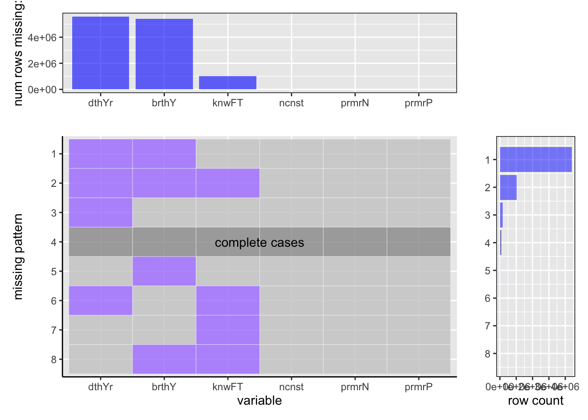
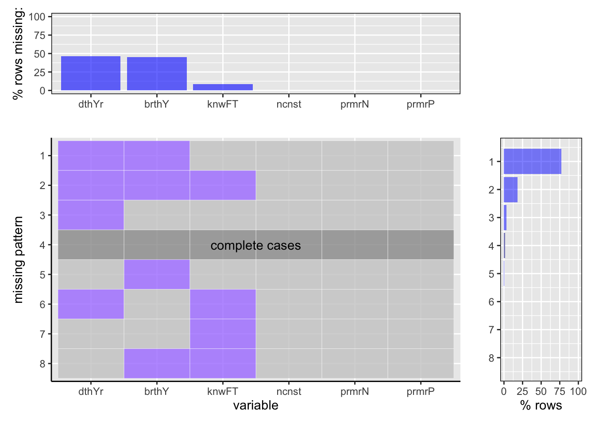

Chapter 4 Missing values
Load data

We have plotted the graphs that denotes the missing values in the ‘name’ dataset that we have used. The ‘name’ dataset includes the following information:
1.nconst (string) - alphanumeric unique identifier of the name/person
2.primaryName (string)– name by which the person is most often credited
3.birthYear – in YYYY format
4.deathYear – in YYYY format if applicable, else ‘’
5.primaryProfession (array of strings)– the top-3 professions of the person
6.knownForTitles (array of tconsts) – titles the person is known for
The first graph above shows the missing values counts whereas the second graph denotes the missing values by percentage.
Analysis:
1. It is observed from the graphs above that the dataset has no missing values for the columns that denotes the person’s detail such as the unique number used to identify them, the person’s name and the person’s profession. Thus, there is no inconsistency in the data that reveals information about the celebrities.
2. The variable that is missing at maximum instances is the death year of the person followed the birth year. It is evident from the percentage plot as well which shows that death year is missing in almost 90% of the data while the birth year is missing in approximately 80% of the data.
3. Apart from the death year and birth year variables, the column that has missing values in the ‘name’ dataset is knownForTitles. This implies that for some celebrities it is known that for what titles they are most known for. The knownForTitles variable is missing in ~15% of the rows.
4. It is interpreted from the right side bar plot the proportion of rows having complete values is very less that is approximately 1%.
5. There are more number of rows that has missing values for both, that is, death year as well as birth year compared to having missing values for individual columns. Moreover, the percentage of rows that has only death year or birth year as missing values is also less than the percentage of rows that has death year, birth year, and knownForTitles together missing.
6. Interestingly, there are very less percentage of rows that has only knownForTitle as the missing values, that is, almost < 1%. This column is always seen missing in a significant proportion with death year and birth year both. At cases where knownForTitles is missing with either death year or birth year, its percentage is also observed to be < 1%.